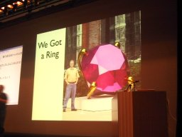
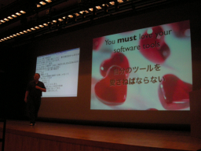
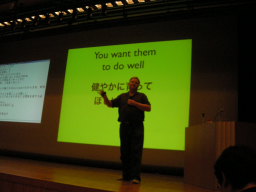
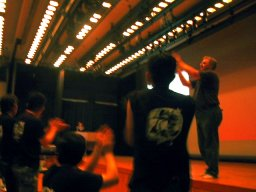
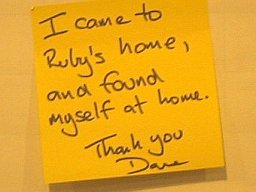
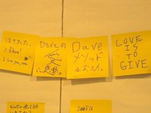

The Island of Ruby
PLEASE NOTE - The text is based upon a memo taken during the talk. Any error in the text is upon zunda, who made the memo and edited the text.
- Speaker
- Dave Thomas - Dave is a principal in The Pragmatic Programmers, LLC ( http://pragmaticprogrammer.com )
- Profile
- Dave Thomas is a writer, trainer, and primarily a programmer. He's the author of 7 books, including The Pragmatic Programmer (with his partner Andy Hunt), Programming Ruby, and Agile Web Development with Rails. He first started using Ruby in 1998. He's the author of RDoc, and contributed most of the documentation for the built-in Ruby classes and libraries.
After all this time, Ruby still makes him happy. - Time
- 17:10 - 18:10
- Slides
- the_island_of_ruby_j.pdf (with Japanese, 8.24 MB)
(Dave walks around the stage barefoot.)
I come here not to talk how good Ruby is, but to thank Ruby that made my life much better.
Thank you.
Dave and Ruby
I started using Ruby 1.4 on 1999. It was an experience that has changed my life.
Normally, I would try a new programming language and be satisfied after an hour or so. It was different for Ruby. I started using Ruby in lunch time. Next day, I was still playing around without doing any other tasks. I fell in love with Ruby.
Married with a big ring of Ruby? My wife worried about it. Is it OK to be falling in love with a tool? Of course, yes. Tim also knows it. Anyway, I had never had such an experience since I first wrote a commercial program in 1972.
Loving a software
Is it OK to love a software tool? The answer is: more than OK. You have to. Software is the most difficult thing people work with.
You have to be in an environment that supports you. Otherwise, you can not do good job.
Raising children and programming
All love their children. Sometimes it is difficult and frustrating - they don't always do what you want. Despite, you want them to do well.
This is like programming, in many ways. Children are of course more important. Programs often don't do what you want. (sigh)
Programming is sometimes difficult and frustrating no matter how deeply you love it. This is also like raising children.
Anyway, you have to care what you do at work.
If you don't love your tools, they will not love you. It shows in your work. Hating the tool causes all the problems - taking short cuts or becoming angry and making mistakes. There is no longer a passion. It becomes something you have to do. We can not keep doing this 8-9 hours a day. What a waste of time.
So, this is why you have to love what you do. To do a good work, you have to love your tools.
I LOVE RUBY.
I even wrote some books.
Why do you love ruby
Why do you love Ruby? It is a difficult question. It is not easy to answer why you love your wife.
Expressiveness
First, it is expressive. There are many ways to say something.
for i in 0..9 puts i end
10.times do |i| puts i end
(0..9).each do |i| puts i end
puts (0..9).to_a
It is always refreshing with small findings and surprises. I found another way to do the same thing:
puts *0..9
This works! Such findings make me happy.
Wabi-sabi
Python and Ruby. In 2001, I did a tutorial session on Ruby for the first time with the room packed with people. Everyone wondered what Ruby is.
People compared Ruby with Python. Python teaches us `Don't do that. Do this.'
Some people like Python, others do Ruby. But there are not many who like both. Why?
Some people like dogs, others do cats. It is a preference thing.
It is same for Python and Ruby. Ruby and Python will give you different things when you play with them.
Python values `Kata' (form). Whoever the author is, programs look similar. Ruby values `Wabi-sabi'. The world is natural and changing. It is not fixed. This is what makes Ruby special.
Ruby is a multi-paradigm language. Not only object-oriented, but programs can also be written procedural or prototyped-based. It is fun to try. You can even program functionally. Of course, there are side-effects. You get many benefits from changing programming paradigms.
Productivity
There are other reasons why we love Ruby.
Ruby makes me look good - be productive.
How does it work? A study shows that different programmers have different productivity. However, for a particular programmer, number of lines of codes (s)he can write in a certain time is not different for programming languages, say 50,000 lines in an year. Which language you can get the most done with a certain number of lines? - Ruby.
Transparency
I like people playing with my code. It is nice to watch somebody using an application I made.
Ruby code is easy to read. The reader can see what is going on there. Most programmers spend most of time reading programs, their own or somebody else.
Thinking in the same way I think.
Ruby thinks the way I think. It makes it easier. We do not have to translate our thoughts.
Nice parents
Ruby has nice parents: Matz and the Ruby community. Everyone is supportive on mailing lists. In a programming sense, they are all like family. I don't want to to rely on nasty people.
So.
I love my children, and Ruby. (Dave is skipping around :-)
Growth of Ruby
Children are growing up, so is Ruby.
My oldest son is a teenager. He is 13 yeas old. He is changing, becoming a young man.
Ruby is also a teenager. Interestingly, it is 14 years old. From being a protected small child, it is becoming an individual, independent in the world.
How is it changing?
- Technically - they are small changes, however:
- Virtual machine
- Keyword parameters
- Socially - they are actually big changes. Ruby has started dating, kind of scary for a parent, with:
- IronRuby
- JRuby
- Rubinius
- Gadens Point
What can a parent do? Tell children good values, help them understand right and wrong, and good and bad, and give them advice, when they ask.
What are good values of Ruby? Matz said:
- Be nice to developers
- Be clear and readable - Most of time, we are reading codes.
- Be flexible and agile - For example, a Rails code does not look like a Ruby code. Ruby is very good at this.
- Be open
- Ruby is available to everyone. You can also obtain libraries using rubygems.
- Decision making is transparent to everyone in mailing lists.
Ruby is dating
We no longer have just one player here. Ruby is dating, seeing other people. We also have to think others.
We still have to
- Be nice to developers
- Be compatible
- Be well documented
- Be easy to be integrated with the environment like OS and libraries
- Be easy to be integrated with tools
- Visual studios
- Emacs
- Work well!
- Currently, Rails is the benchmark. But it is not only the Ruby program.
- We have to be careful what `work' means.
- Be clear and readable
- We should not extend the language where a library would work.
- We want to avoid the J++ situation.
- We should not extend the language where a library would work.
- Be flexible and agile
- Ruby does not wear a suit, not a `salary-man'. It is not a corporate language. We should not make it.
This item conflicts with the requirement to be well documented. As for now, everything is working without specifications.
I still do not have the answer to solve this conflict.
Still, writing a specification worries me. It might be a political activity. We do not want politics in Ruby.
- Be open
- Code to be open
- JRuby has done a good job - it is open source.
- Process to be open
- Decision-making process has to be bidirectional. Implementers must give and take.
- Code to be open
It is all about people and community.
Our child has begun talking with other people. Parents are also giving advices (when asked).
Potential danger to Ruby
Ruby is now serious.
Change will happen, ... from Apple, Mircosoft, Sun, and Thoughtworks.
What kind of changes might happen?
- Damage to the community - we can not yet afford.
- Vendor fragmentation - This is not likely, but possible. Ruby must be Ruby, not of any company.
- Conflicting voices
- It is good to talk about future of Ruby, on support of Unicode, for example.
- We have to concern other people who address business needs. We should not confuse them.
- Explosive growth
- Ruby was born in Japan and spread over the world. In 2006, it expanded to the enterprise field.
Look up. What do we see? (Dave looks up) ... We have not seen anything.
There are more people coming to this community.
Accept them and show them OUR way, the `Ruby-dou'. We have to protect ourselves and learn from them. There are no more islands in the world anymore. Ruby is no longer an island.
Prepare to welcome new people.
Why? - we have moral obligation. We've made tens of thousands of people happy. Now, we can make more developers happy.
I thank the Ruby community in Japan for this opportunity. (The screen shows many pictures taken by Dave from pre-conference party to just before his talk starts. It shows participants of the conference, Matz, staffs of the conference, and one of them who is exhausted and sleeping.)
We are all relatives. I also thank Matz.
It has been a very very exciting two days. I felt very welcomed.
Thank you very much.
(standing ovation)
Q&A
- Q
- There are some people who have been using Ruby having mixed feeling to Rails. How about you?
- A
- Good question. Frankly, I have been staying away from the community until three weeks ago. I did not feel right from the community. This is not a problem of the individuals. Growth of Rails is too fast and there might not be ant time to be nice. They are really busy. However, in Rails Conf three weeks ago, they said `we want to be nice'. They actually changed after two days. They changed 180 degrees. Please give the Rails community another chance.
- Q
- Ruby is expanding to the enterprise field. I can not recall an example of a project that has changed from community based to enterprise based at once. Is there such an example?
- A
- Java is one of the examples. There are good points and bad issues. It is sure that a person or a company can not scale. Everyone have to help the growth. I can not tell what will happen. We just have to keep options open. It would go along because the Ruby community is agile.
- Q
- Is incompatibility evolution or to be avoided?
- A
- Ruby should keep changing. I do not think it is enough yet. For an example, I would like to see list comprehension supported. It is good to try many things when we are young. However, more grown, more responsibility we will have. We have to try many things while we are young.
- Q
- The Ruby community has to change. It might be like the Linux community, which has respect and challenge, 10 years ago. Looking at flexibility of the current community, it seems to be able to handle the changes.
- A
- Yes. But are Matz and Linus similar? It is not good to just follow what Linux has done. We want to be Ruby.
- Q
- You said Ruby is good because it is agile. However, enterprise is not agile. Which will change?
- A
- Good question. As I do not know the situation in Japan, I take cases in the U.S.A. In the U.S.A., agile development is still not the main stream in companies. However, engineers are becoming agile under the desk. Smart companies are creating test teams. It is the same for Ruby and Rails. They are starting to try with small teams. No one can change everything at once. I imagine the situation is the same in Japan and in India, wherever developers are. Users should let companies know if they understand it is a good way to do things. I think companies will change eventually.
- Q
- Thank you for loving Ruby. Have you ever worried about being hated by Ruby?
- A
- Gosh. If in case it happens.... (Dave is all confused.) It is a programming language... Well, I am doing 95 % of work with Ruby, but it is not 100 %. I would try a new language when it is released. It is important to try new ways of thinking. And I may or may not come back to Ruby. But, any way, I will never be hated by Ruby!
(Logged, translated into Japanese and back into English by zunda)
From the bulletin board in the lobby:
 
License
 This English version of a log of the presentation
`The Island of Ruby' by Dave Thomas
on June 10th, 2007 in
RubyKaigi2007
held in Tokyo, Japan
and the photographs by Koji Shimada and zunda
are published under a
Creative Commons Attribution 3.0 License .
This English version of a log of the presentation
`The Island of Ruby' by Dave Thomas
on June 10th, 2007 in
RubyKaigi2007
held in Tokyo, Japan
and the photographs by Koji Shimada and zunda
are published under a
Creative Commons Attribution 3.0 License .


Keyword(s):
References:[RubyKaigi2007速報ログ]